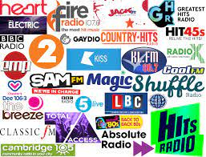
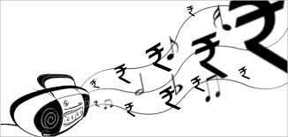

Why Choose FM Radio Advertising?
FM radio remains one of the most effective advertising mediums, offering high recall, local targeting, and cost-effective campaigns. With radio, your brand voice travels directly to the audience wherever they are — in cars, homes, or offices.
FM Radio Advertising

Radio Jingles
Catchy jingles crafted to ensure brand recall and audience engagement.
Spot Ads
Short audio ads played during peak hours to maximize reach.

Show Sponsorship
Associate your brand with popular radio shows and hosts.

RJ Mentions
On-air mentions and live endorsements by trusted radio jockeys.
Benefits of FM Radio Advertising
- ✅ Wide reach across metro and regional cities
- ✅ Affordable ad packages for every budget
- ✅ Local targeting with specific FM stations
- ✅ High audience engagement and recall
Let Your Brand Voice Be Heard!
Book your FM Radio advertising campaign with Star Vision Ads today.